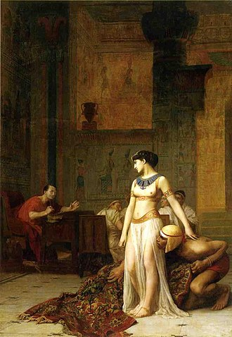
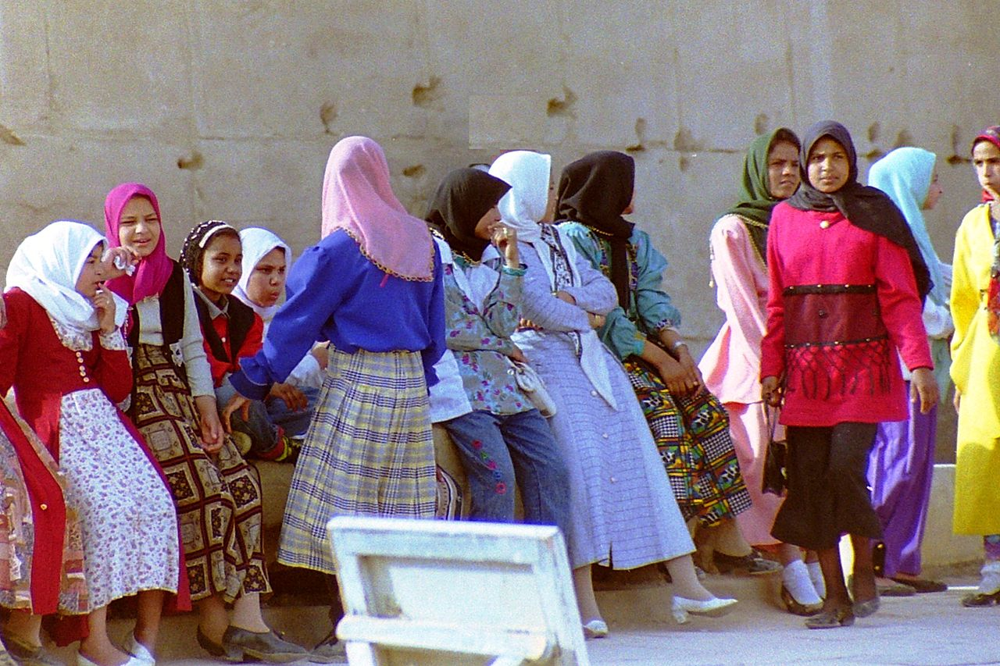
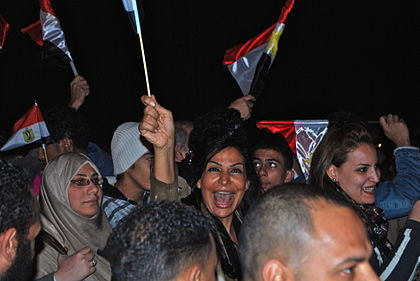
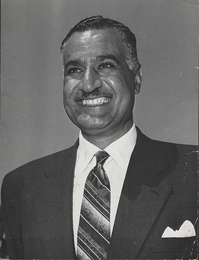
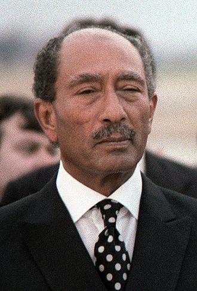
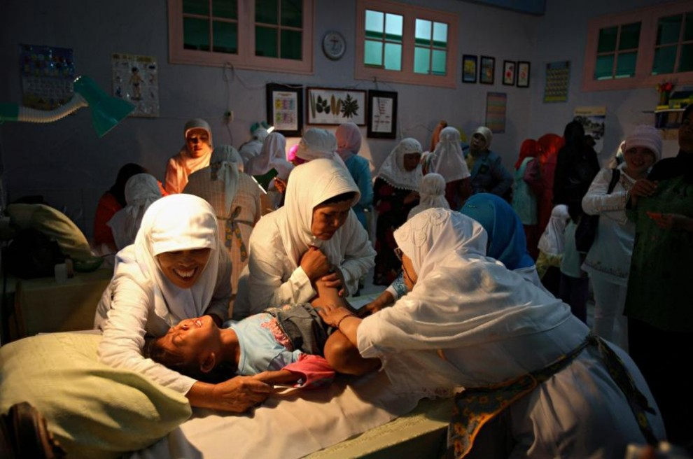
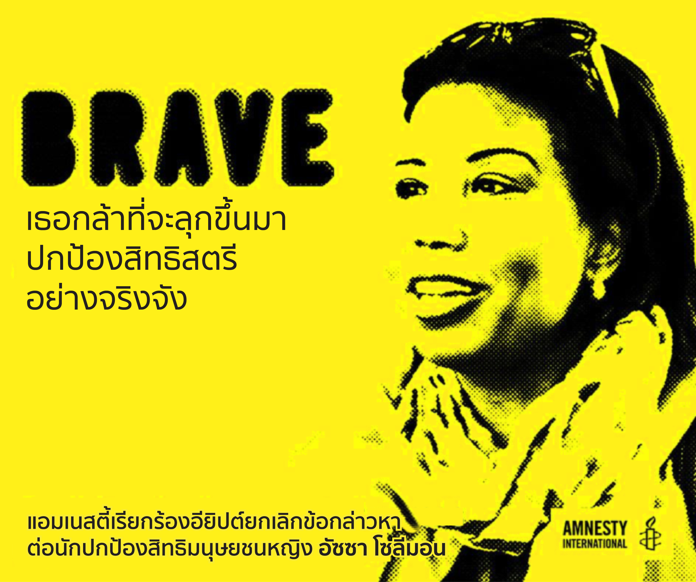

Introduce
หากกล่าวถึงประเทศอียิปต์นั้นหลายๆคน คงนึกถึง พีรามิด สฟิงซ์ มัมมี่ และฟาโรห์ อียิปต์นั้นเคยมีฟาโรห์หญิงที่ผู้คนต่างรู้จักกันในนาม "คลีโอพัตรา"  cleopatra โดยการที่อียิปต์ได้มีฟาโรห์หญิง นั้นสามารถแสดงถึงความเท่าเทียมกันของผู้ชาย และผู้หญิง แต่อียิปต์ในปัจจุบันนั้นผู้หญิงกลับถูกแบ่งชนชั้นให้ต่ำกว่าเพศชาย ทั้งด้านการศึกษา ตำแหน่งทางการงาน จนกระทั่งการใช้ชีวิตประจำวัน
การศึกษาของหญิงในอียิปต์
ประชากรหญิงในอียิปต์(อายุ15ปีขึ้นไป)นั้นมีเพียงแค่ 65.4% ที่ได้รับการ ศึกษาที่เหมาะสม ในขณะที่เพศชายนั้นได้รับการศึกษาอยู่ที่ 82.2%(ข้อมูลจากปี2015) และเพื่อจำกัดการติดต่อระหว่างผู้ชาย และผู้หญิงตามประเพณีจึงมีการคลุมหน้า และ การแบ่งแยกเพศที่โรงเรียน ในสังคมอียิปต์มีแนวโน้มที่นักเรียนหญิงจะลาออกเมื่อพวกเธอ เข้าสู่วัยแรกรุ่น และลดการมีปฏิสัมพันธ์กับเพศชาย  ภาพนักเรียนหญิงในอียิปต์
ความเสมอภาคด้านการงาน
จากผลการสำรวจของ "Pew Research Center" ในปี 2010 พบว่าชายชาวอียิปต์ 45% และผู้หญิง 76% สนับสุนความเสมอภาคทางเพศ โดยพบว่าประชากรทั้งหมดยอมให้ผู้หญิงทำงาน เป็น 61% ในขณะเดียวกันมีประชากร 75% ที่คิดว่า "ผู้ชายควรมีสิทธ์ในการทำงานมากกว่า เนื่องจากมีงานน้อย" ผลสำรวจในปี 2010 และ 2011 แสดงให้เห็นว่า 39% ถือว่าความเท่าเทียม ทางเพศเป็นเรื่องสำคัญมากสำหรับอนาคตหลังจากการปฏิวัติของอียิปต์ และ 54% ของชาวอียิปต์ สนับสนุนในการแยกเพศในการทำงาน  ภาพการปฏิวัติในปี2011
การปฏิวัติของอียิปต์
กฏของ Gamal Abdel Nasser ได้ใช้นโยบายในการเรียกร้องสิทธิสตรี โดยระบุสวัสดิการของรัฐ เป็นรัฐสตรีนิยม โดยผู้หญิงได้รับการรับรองสิทธิในการลงคะแนนเสียง และในรัฐธรรมนูญของอียิปต์ ปี 1956 ได้ระบุใว้ว่าห้ามเลือกปฏิบัตทางเพศ กฎหมายแรงงานเปลี่ยนไปเพื่อให้แน่ใจว่าผู็หญิงใน กำลังแรงงานและการลาคลอดนั้นได้รับการคุ้มครองตามกฎหมาย  Gamal Abdel Nasser แผนการเปิดเสรีทางเศรษฐกิจของระบอบ Sadat ส่งผลให้ระบบนี้ล่มสลาย ในขณะที่Nasserist อนุญาติให้มีการศึกษาที่หลากหลายสำหรับผู็หญิง นโยบายของ Sadat ได้จำกับโอกาศของผู้หญิง ทำให้การว่างของของผู้หญิงเปลี่ยนไป จาก 5.8% ใน 1960 เป็น 40.7% ในปี 1986 แทนที่นโยบาย นโยบายจะสนับสนุนผู้หญิงในเชิงเศรษฐกิจในระหว่างตั้งครรภ์ ผู้หญิงได้รับการสนับสนุนให้ออก จากงานทั้งหมดหรือทำงานนอกเวลา  Muhammad Anwar el-Sadat
การล่วงละเมิดสิทธิทางเพศ
มีสตรีในอียิปต์หลายๆคนถูกข่มขืนและไม่สามารถดำเนินคดีกับชายผู้กระทำผิด ได้ ทำให้ประเทศอียิปต์นั้นแทบจะเป็นประเทศที่การข่มขืนเป็นเรื่องทั่วๆไป และยัง มีการให้หญิงชาวอียิปต์ทำการขลิบอวัยวะเพศ โดยเป็นการตัดคลิตตอริสทิ้งซึ่งเป็น การกระทำที่ผิดกฎหมายในปัจจุบัน  ภาพกระบานการขลิบอวัยวะเพศหญิง องค์การ UNICEF รายงานว่า 87% ของผู้หญิงและเด็กหญิงชาวอียิปต์อายุ 15-49 ปีได้รับ การตัดอวัยวะเพศหญิง และในเดือนมิถุนายน 2013 Soheir al-Betea เด็กหญิงอายุ 13 ปี เสียชีวิตเนื่องจากเข้ารับการผ่าตัด FGM และแพทย์ผู้รับผิดชอบในกระบวนการดังกล่าวได้ ถูกตัดสินว่าไม่มีความผิด
นักปกป้องสิทธิสตรี
 อัซซา โซลีมอน นักปกป้องสิทธิสตรี - อียิปต์ อัซซาเป็นทนายความ นักปกป้องสิทธิสตรี ผู้ร่วมก่อตั้งศูนย์กลางคุ้มครองเหยื่อจากการทรมาน และการควบคุมตัวโดยพลการในอียิปต์ (CEWLA) และองค์กรทนายความเพื่อสันติและความยุติธรรม นอกจากนี้ เธอยังช่วยเหลือและให้การศึกษาแก่ผู้หญิงที่เป็นเหยื่อความรุนแรงด้วย การเป็นนักปกป้องสิทธิสตรีส่งผลให้เธอถูกคุกคามหลายครั้งทั้งจากทางการและสื่ออียิปต์ ปัจจุบัน เธอถูกรัฐบาลฟ้องสามคดีและถูกจำกัดเสรีภาพในการเดินทาง รวมทั้งถูกยึดทรัพย์สินส่วนตัวด้วย หากถูกตัดสินว่ามีความผิดจริง เธออาจต้องติดคุกสูงสุดถึง 15 ปี